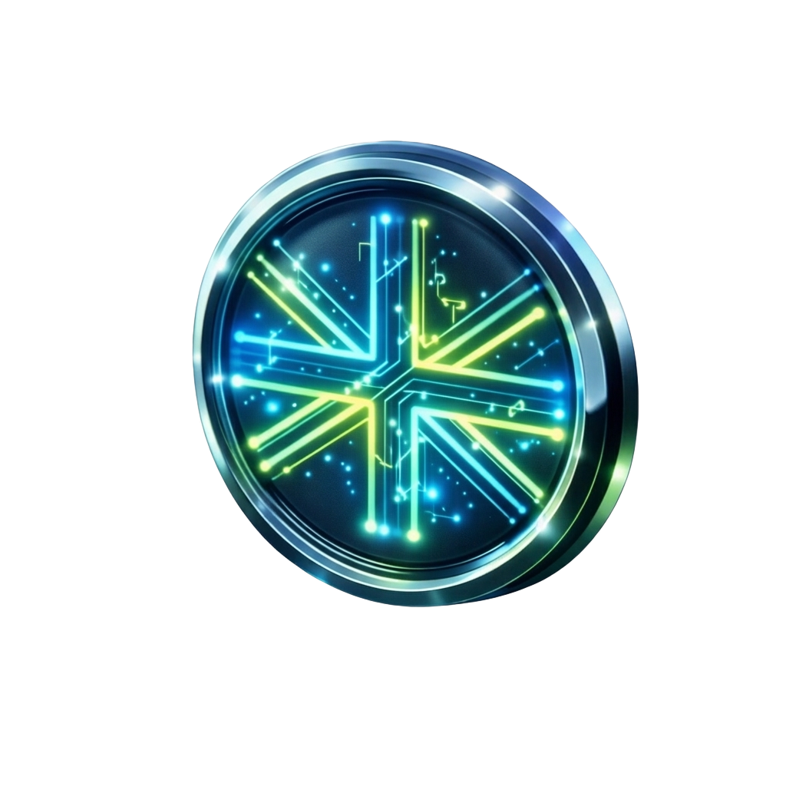

Ламаємо скляну стелю між Вами та чеками у $. Від локального технічного фахівця — до Global Pro & AI Solution професіонала через 50 тижнів стратегічної капіталізації Вашого авторитету.
Світ змінився. Сьогодні бути «просто фахівцем» недостатньо. У світі штучного інтелекту Ваша цінність визначається не тим, що Ви знаєте, а тим, як Ви це транслюєте.
Ми створили цю систему не як черговий курс, а як професійний тренажер Вашого авторитету на глобальному ринку.
Інтеграція мови у професійний інструментарій як ключового компонента архітектури.
Використання потужності ШІ для звучання на рівні Senior вже сьогодні.
Побудова стану впевненого лідера, який контролює кожен зідзвін.
Від локального фахівця до AI Solution Designer за 50 ітерацій.
"Годі просто вчити мову. Час почати нею заробляти."
Перші 10 кроків до впевненого самопозиціонування.
Вчимося презентувати свій набір інструментів так, щоб клієнт бачив у тобі дорогого експерта.
Виходимо за межі "I am fine". Вчимося синхронізуватися з клієнтом через Present Continuous.
Припиняємо бути "майстром на всі руки". Вчимося виділяти вузьку експертизу та продавати її дорого.
Прозорість дедлайнів будує довіру. Вчимося називати точний час результату та вчасно оновлювати статус.
Переходимо від "прохання дозволу" до пропозиції експертних рішень, опановуючи роль господаря проекту.
Наступні модулі відкриваються щопонеділка.